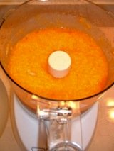

Baby food cook book recipe methods
Homemade Food for Your Baby and Childmade from the goodness of your own kitchen! It is easier than you might think.Baked FruitCount on two to three apples to produce 1 cup of mashed apple. Preheat oven to 350 degrees F. Wash and core apples Wrap each apple in a square of aluminum foil, and seal tightly. Bake for 30 to 45 minutes, testing with a fork for right amount of softness. Remove foil, skin, and core. Mash apples. Use the same method for pears, but reduce baking time to 15 to 30 minutes.
Baby Food Cook Book Recipe: Pureed MeatsCut meat into 1/2-inch cubesTrim off all fat Add 1 cup of meat or vegetable stock to 1 cup of meat Simmer until meat is tender - 45 minutes to an hour. Drain stock, reserving the liquid When you puree, use l/2 cup of cooking liquid for each cup of meat Freeze extra portions immediately.
LegumesCarefully rinse and pick over 1 cup of any legume (beans lentils etc.). Soak in water overnight or bring to a boil for 2 minutes, cover, and then allow to sit for 2 hours. Drain off the soaking water or the cooking water, then add 3 cups fresh water and bring beans to a boil. Reduce heat and simmer, covered, until beans are tender (anywhere from 30 minutes to 2 hours, depending on your choice of legume). Skim the surface often as beans are simmering. Puree with 3/4 cup milk. Freeze unused portions immediately. Baby Food Cook Book Recipe: Simple Yummy White Beans This is a recipe for older infants and children. You can add the mixture to other recipes. It's delicious spread on a tortilla and topped with melted cheese!High in fiber, protein, and iron. Makes 1 cup * One 15-oz can white beans, rinsed and drained * 1 Tbs water Pulse white beans and water in a food processor for about a minute or until smooth Mixture should be the consistency of peanut butter. If necessary, add additional water, 1 teaspoon at a time, until completely smooth. Baby Food Cook Book Recipe: Orange VeggiesHigh in vitamins A and C and fiber. Makes 1 1/2 cups. You can add this delicious veggie puree to other recipes to make them more nutritious. Acorn squash can be substituted for sweet potato.
* 1 yam or sweet potato scrubbed, peeled and cut in chunks * 3 carrots, scrubbed, peeled and cut in chunks * 2 Tbs water or 100% unsweetened apple juice In a pot, cover yam and carrots with cold water. Boil 25 minutes, or until soft. Drain and puree in food processor with water until completely smooth , 1 minute. Add up to 1 tablespoon water to make mixture smoother. Vegetable PureesCut vegetables into small pieces and steam them in a vegetable steamer over 1 or 2 inches of water in a tightly-covered pot. Use this water as a thinner when pureeing vegetables. Approximate ratio of vegetables to liquid is 2 cups of fresh vegetables to between 1/3 to 1/2 cup of liquid. Place steamed vegetables and a little of the steaming water in a food processor or baby-food grinder and puree to a soft consistency. Add flavor and protein by adding an equal amount of baked or steamed potato to the steamed vegetables and puree together. Thin mixture with milk to desired consistency. Freeze unused portions immediately. Baby Food Cook Book Recipe: Gourmet DinnerPut the following ingredients in a blender or food processor: 1 cup cooked meat 2/3 cup cooked vegetables 1/3 cup cooked white or brown rice 1 cup stock or 100% vegetable juice Puree, and freeze leftover portions immediately. Yield should be approximately 3 cups.
|